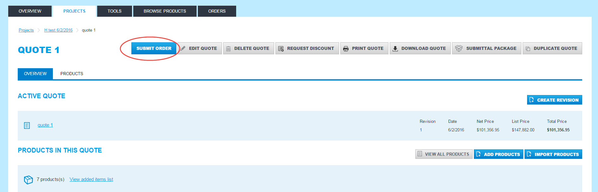
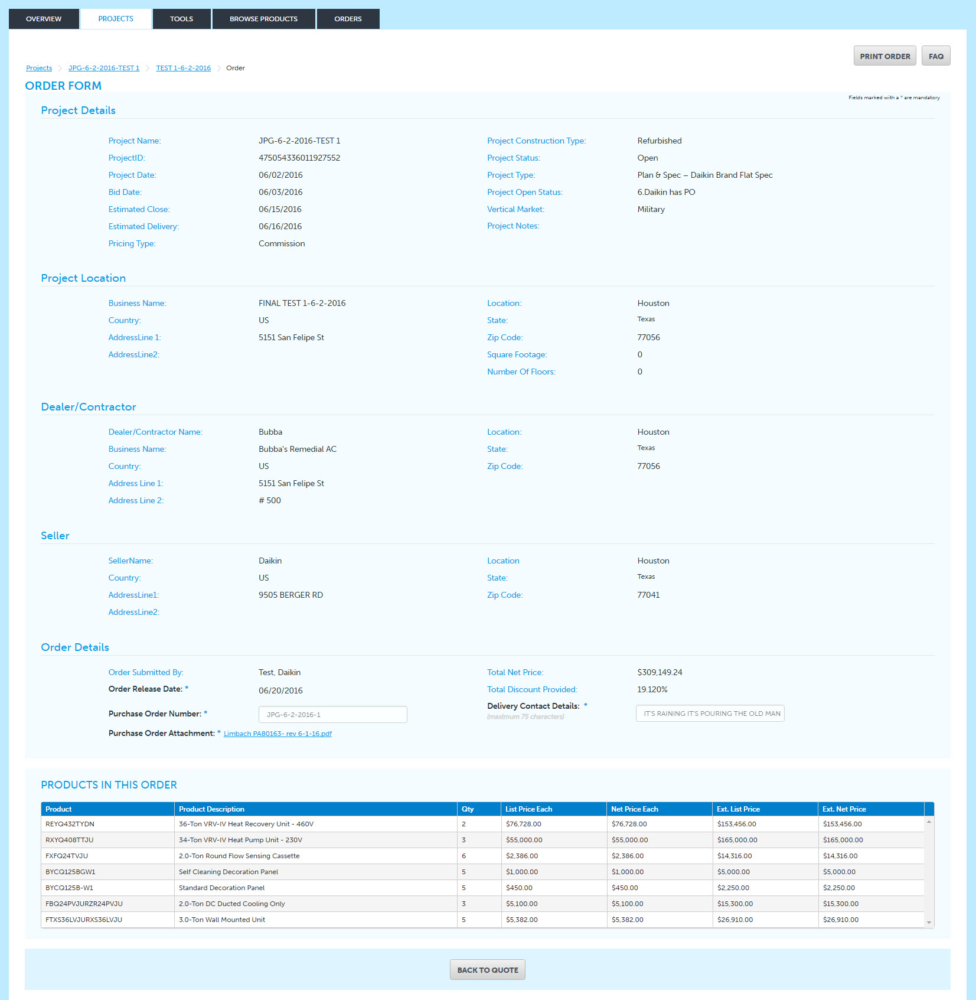
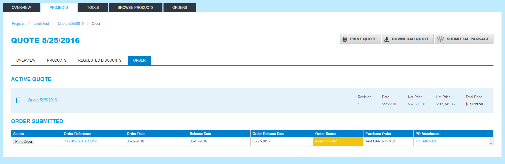

FAQ
Q: How do you submit an order?
A: Open your active quote to view overall project summary and click Submit Order button.
One page order form will open with information that needs to be completed such as project location/address, dealer/contractor/address, Order Details such as P/O #, shipping instructions, etc.
Upon entering all required information and PO is attached, click Submit button at the bottom of the form to submit the order.
Q: What if I have do not have permission to submit a PO
A: Contact your Daikin City administrator to approve and set up access to submit order.
Q: How do I know the CSR has received my order
A: You will receive an email letting you know the order has successfully been submitted. The CSR will send an acknowledgement within 1 business day.
Q: What do I do if I need to cancel or change my PO?
A: Contact your CSR to review the changes. If the variance is over 1% an amended discount request may be required..
Q: How do I know what stage my orders in?
A: Click on the Revision # that was used to submit discount and Purchase Order. Click on Order Button on top of screen which will provide the following summary status. The order status column will change once the CSR reviews and promotes it to MAPICS ordering system, as product ships and invoices.
Q: Upon submitting order can I maintain and update the project status in Daikin City?
A: Once a purchase order is entered, changes to the project in Daikin City are not permitted. Contact your CSR to make adjustments to the order.
Q: Do I need to attach my hard copy PO to the order in Daikin City?
A: Yes, before you electronically submit your order, you would attach the hard copy. Order cannot be processed without proper PO attachment.
Q: Can we use the same PO # more than once?
A: No, once you’ve used a PO #, it cannot be duplicated. You will need to use a different PO #.
Q: Do I need to email the CSR the DAR approval?
A: No, the DAR approval will automatically be attached when you submit the order.
Q: What if there is an item not in Daikin City that I want to put on my PO?
A: You will need to contact Project Desk, and the CSR to decide whether or not the item can be added or if it needs to be done manually.
Q: Can I submit a commission order via Daikin City Quote to Order Process?
A: At this time, the Quote to Order process is only for buy/sell projects. The reason is that for commission projects, documents need to be reviewed by the Project Desk and Credit. Additionally a customer number needs to be created in MAPICS.